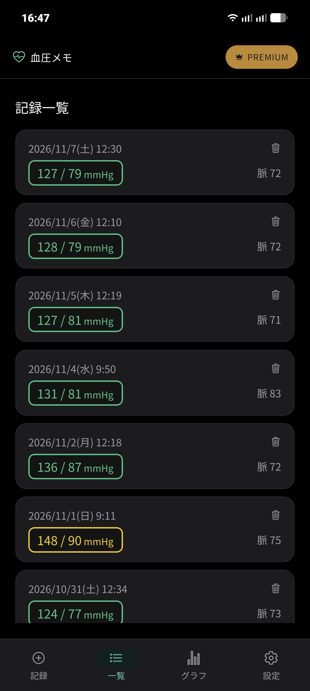
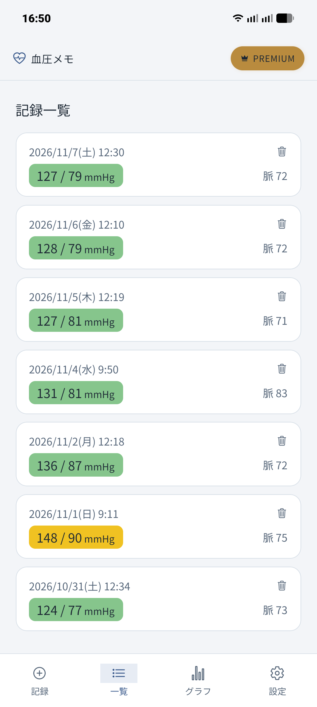
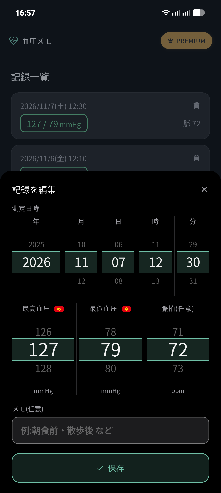

📖 はじめに（この画面でできること）
画面下部の「一覧」タブをタップすると、これまでに保存した血圧記録が新しい順にカード形式で並んで表示されます。
🛠️ 詳しい操作手順
STEP 1
過去の測定記録を一覧で確認する
各記録カードには以下の情報が表示されます。
- 測定日時: 年/月/日 (曜日) 時:分が表示されます。
- 血圧値（枠線）: 最高血圧 / 最低血圧（mmHg）。枠線の色は血圧レベル（緑：安心、黄：注意、橙：高め、赤：危険）に連動して表示されます。
- 脈拍: 記録されている場合、右側に「脈 XX」と表示されます。
- ゴミ箱アイコン: カードの右上に表示され、タップで削除できます。

ダークモードでの記録一覧画面

ライトモードでの記録一覧画面
STEP 2
記録をタップして編集する
修正したい記録カードの本体部分をタップすると、画面下部から「記録を編集」シートがスライドして開きます。
- 測定日時の変更: 「年」「月」「日」「時」「分」の各ホイールを回転させて、過去の正確な日時に変更できます。
- 血圧・脈拍の変更: 最高血圧・最低血圧・脈拍のホイールを調整します。
- メモの編集: 測定時のメモを追記・修正できます。
変更が完了したら、シート下部の「✓ 保存」ボタンを押すと、即座に更新内容が反映されます。

日時ホイールと数値ホイールで正確に再編集が可能
STEP 3
不要な記録を削除する
誤って入力してしまった記録や不要になったデータは、該当するカード右上のゴミ箱アイコンをタップすることで素早く削除できます。
⚠️ 削除に関する注意
削除したデータは元に戻せません。定期的に「設定」タブからバックアップを作成しておくことをおすすめします。
❓ 一覧・編集についてのよくある質問
Q 編集した内容はグラフ画面にも自動で反映されますか？
はい、一覧で修正した測定日時や血圧値は、即座に折れ線グラフやカレンダー、散布図などの分析画面にも反映されます。
Q 昨日の測定分を今から登録したいときはどうすればいいですか？
まず「記録」タブで通常の数値を入れて保存し、その直後に「一覧」タブで該当のカードをタップして「記録を編集」を開き、測定日時を昨日の日時に変更して「保存」してください。